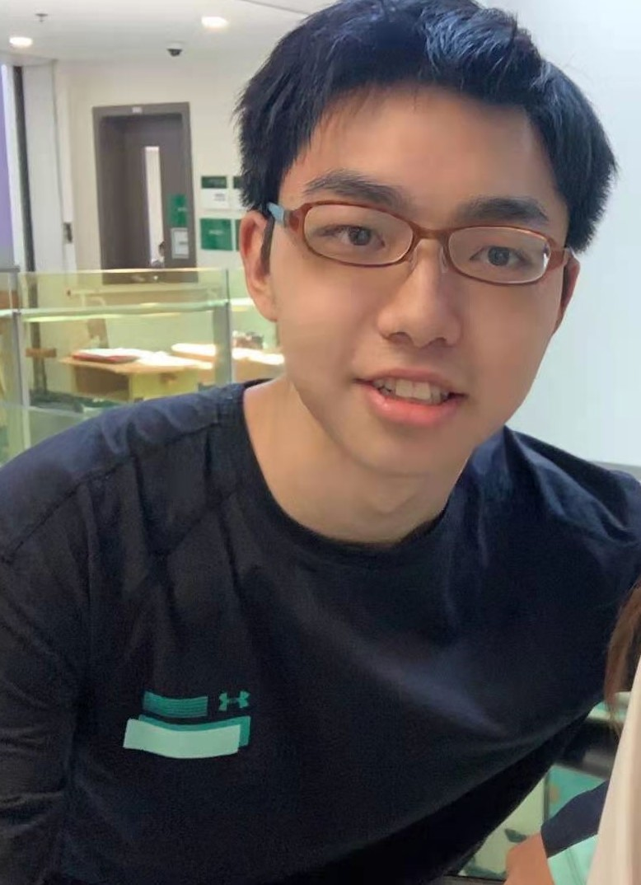

About
Hello! My name is Yujie Zhang and I'm now a computer science student in rose-hulman. I'm from Shnaghai, China. I'm interested in realizing my thoughts by using programming method and thus I choos computer science as my major.
Besides computer sicence, I'm also a big fan of history. During the high school, I read about ten history books, including the history of China, Germany, France, America, and two great wars. I even choose History SL as one of my course when I was learnig IB in high school.
This is my personal website. You can find my basic information, project experience, the resume, and many other interesting things about me. I wish you are glad to browse this website.